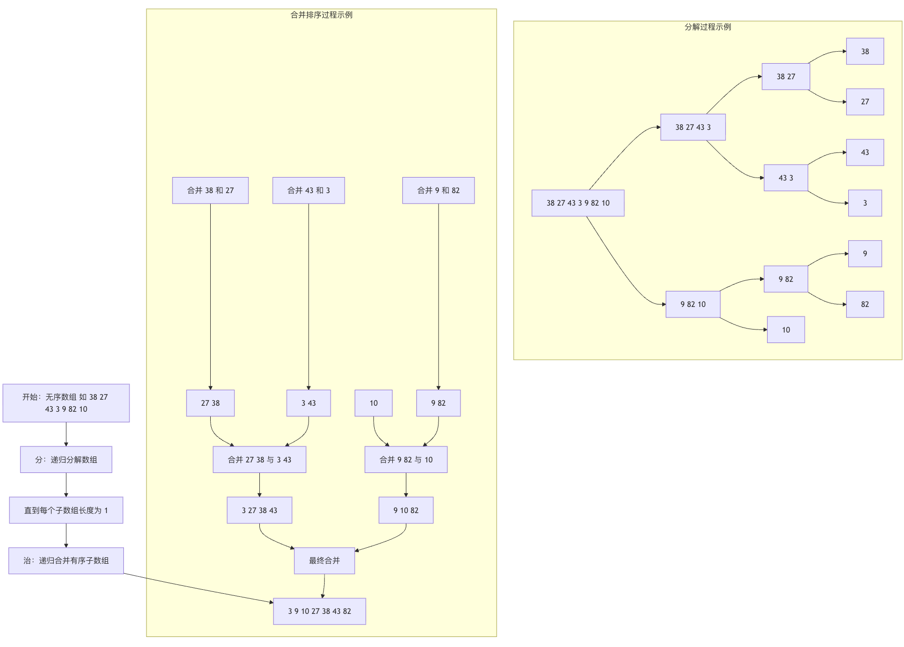
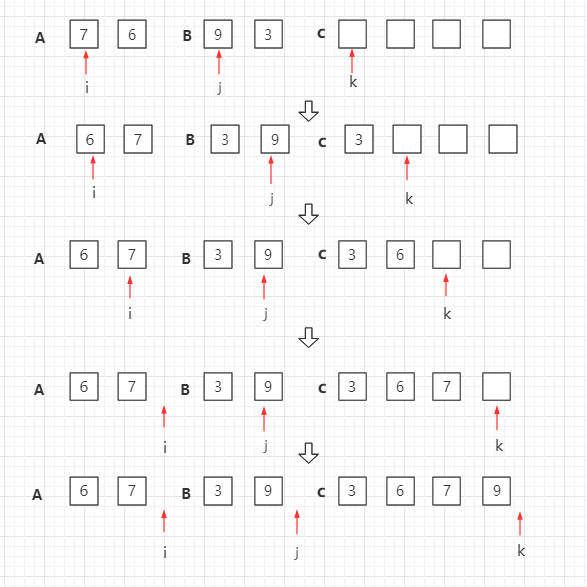
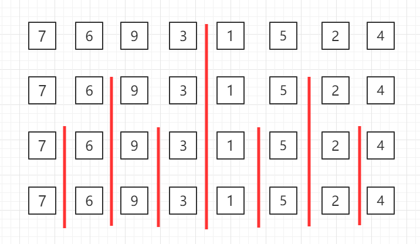
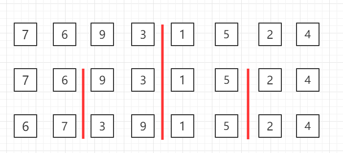
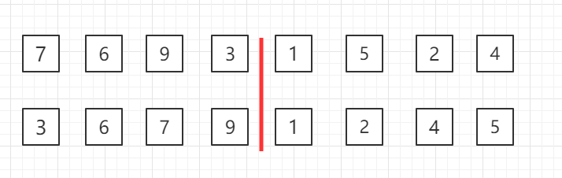
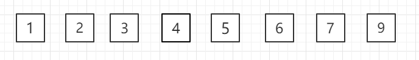

Ordenamiento por mezcla
El ordenamiento por mezcla (en inglés: Merge sort, o mergesort) es un algoritmo de ordenamiento eficiente basado en la operación de mezcla.
El ordenamiento por mezcla es una aplicación muy típica del método de divide y vencerás (Divide and Conquer). Combina subsecuencias ya ordenadas para obtener una secuencia completamente ordenada; es decir, primero ordena cada subsecuencia y luego ordena entre los segmentos de subsecuencias. Si se combinan dos listas ordenadas en una lista ordenada, se denomina fusión bidireccional.
Imagina que tienes que ordenar una baraja de cartas completamente desordenada. Un método eficiente es: primero divide la baraja en dos montones pequeños, ordena cada montón por separado y, finalmente, combina estos dos montones ya ordenados en una baraja completa ordenada.El ordenamiento por mezclase basa precisamente en estaestrategia de divide y vencerásy es un algoritmo de ordenamiento clásico.
Sus operaciones principales se pueden resumir en dos pasos:
- 分: recursivamente, dividir una lista grande desordenada repetidamente por la mitad hasta obtener varias sublistas pequeñas, hasta que cada sublista contenga solo un elemento (una lista de un elemento está naturalmente ordenada).
- 治: recursivamente, combinar estas sublistas ordenadas de dos en dos, ordenando durante el proceso de combinación, hasta obtener una lista ordenada completa.
Indicaciones de uso
El ordenamiento por mezcla es adecuado para escenarios con grandes volúmenes de datos y que requieren estabilidad.
El ordenamiento por mezcla es un algoritmo de ordenamiento estable (es decir, el orden relativo de elementos iguales se mantiene después de la ordenación), su complejidad temporal es O(n log n) en cualquier caso, lo que lo hace muy eficiente para procesar grandes volúmenes de datos, pero su complejidad espacial es O(n), porque el proceso de combinación necesita arreglos adicionales para almacenar datos temporalmente.
El siguiente diagrama de flujo muestra claramente todo el proceso de división y combinación del ordenamiento por mezcla:

Diagrama del proceso
El ordenamiento por mezcla es un ejemplo de algoritmo recursivo. La operación básica en este algoritmo es combinar dos arreglos ya ordenados. Se toman dos arreglos de entrada A y B, un arreglo de salida C, y tres contadores i, j, k, cuyas posiciones iniciales se colocan al inicio de los arreglos correspondientes.
El menor entre A[i] y B[j] se copia a la siguiente posición en C, y el contador correspondiente avanza un paso.
Cuando uno de los dos arreglos de entrada se agota, se copia el resto del otro arreglo a C.

Diagrama de agrupación recursiva del ordenamiento por mezcla de arriba hacia abajo:

Realizar ordenamiento por mezcla en los datos agrupados de a dos en la tercera fila

Realizar ordenamiento por mezcla en los datos agrupados de a cuatro en la segunda fila

Realizar el ordenamiento por mezcla en todo el conjunto

Código de ejemplo en Java
Descargar el paquete de código fuente:Download
Código del archivo MergeSort.java:
// Fusionar las dos partes arr[l...mid] y arr[mid+1...r]
private static void merge(Comparable[] arr, int l, int mid, int r) {
Comparable[] aux = Arrays.copyOfRange(arr, l, r + 1);
// Inicialización: i apunta al índice inicial l de la mitad izquierda; j apunta al índice inicial mid+1 de la mitad derecha
int i = l, j = mid + 1;
for (int k = l; k <= r; k++) {
if (i > mid) { // Si todos los elementos de la mitad izquierda ya han sido procesados
arr[k] = aux[j - l];
j++;
} else if (j > r) { // Si todos los elementos de la mitad derecha ya han sido procesados
arr[k] = aux[i - l];
i++;
} else if (aux[i - l].compareTo(aux[j - l]) < 0) { // El elemento señalado por la mitad izquierda < el elemento señalado por la mitad derecha
arr[k] = aux[i - l];
i++;
} else { // El elemento señalado por la mitad izquierda >= el elemento señalado por la mitad derecha
arr[k] = aux[j - l];
j++;
}
}
}
// Usar recursivamente el ordenamiento por mezcla para ordenar el rango arr[l...r]
private static void sort(Comparable[] arr, int l, int r) {
if (l >= r) {
return;
}
int mid = (l + r) / 2;
sort(arr, l, mid);
sort(arr, mid + 1, r);
// Para el caso arr[mid] <= arr[mid+1], no se realiza merge
// Es muy eficaz para arreglos casi ordenados, pero para casos generales tiene cierta pérdida de rendimiento
if (arr[mid].compareTo(arr[mid + 1]) > 0)
merge(arr, l, mid, r);
}
public static void sort(Comparable[] arr) {
int n = arr.length;
sort(arr, 0, n - 1);
}
// Probar MergeSort
public static void main(String[] args) {
int N = 1000;
Integer[] arr = SortTestHelper.generateRandomArray(N, 0, 100000);
sort(arr);
// Imprimir el arreglo
SortTestHelper.printArray(arr);
}
}
Principios del algoritmo y explicación detallada de los pasos
La implementación del ordenamiento por mezcla se basa principalmente en dos funciones principales:merge_sort(responsable de 'dividir') ymerge(responsable de 'combinar').
1. Función de divisiónmerge_sort
Esta función trabaja de forma recursiva:
Caso base: si la longitud del arreglo actual es menor o igual a 1, ya está ordenado, y se devuelve directamente.
Caso recursivo：
- Encontrar la posición media del arreglo
mid。 - Para la mitad izquierda
arr[:mid]llamada recursivamerge_sort。 - Para la mitad derecha
arr[mid:]llamada recursivamerge_sort。 - Finalmente, llamar a la
mergefunción para fusionar las dos mitades ya ordenadas.
2. Función de combinaciónmerge
Esta es la esencia del algoritmo; se encarga de combinar dosya ordenadossubarreglos pequeños en un arreglo ordenado grande. El proceso es similar a hojear simultáneamente dos directorios telefónicos ordenados alfabéticamente y combinarlos en uno solo.
- Crear un arreglo temporal
temp, y tres punteros:i(apunta al elemento actual del arreglo izquierdo),j(apunta al elemento actual del arreglo derecho),k(apunta a la posición de llenado del arreglo temporal). - Comparar
left[i]和right[j], colocarel menorde esos elementos entemp[k], y luego el puntero correspondiente ykavanzan un paso. - Repetir el paso 2 hasta que todos los elementos de uno de los arreglos se hayan colocado en el arreglo temporal.
- Agregar directamente, en orden, todos los elementos restantes del otro arreglo al final del arreglo temporal (estos elementos son naturalmente mayores que los ya colocados y ya están ordenados).
- Del arreglo temporal,
tempcopiar la secuencia ordenada de vuelta a las posiciones correspondientes del arreglo original.
Implementación del código y análisis línea por línea
Implementemos el ordenamiento por mezcla en Python. Proporcionaremos una versión completa con comentarios detallados.
Datos de prueba
Primero, preparamos una lista desordenada como datos de prueba:
Ejemplo
test_array = [38, 27, 43, 3, 9, 82, 10]
print("Arreglo original:", test_array)
Implementación completa
Ejemplo
"""
Función principal del ordenamiento por mezcla.
Parámetros:
arr (list): La lista a ordenar.
Retorna:
list: Nueva lista ordenada (para mayor claridad, esta implementación devuelve una nueva lista).
"""
# Caso base: si la longitud del arreglo es 0 o 1, ya está ordenado
if len(arr) <= 1:
return arr
# 1. Dividir: encontrar el punto medio y dividir el arreglo en dos mitades
mid = len(arr) // 2
left_half = arr[:mid] # Mitad izquierda
right_half = arr[mid:] # Mitad derecha
# Ordenar recursivamente las dos mitades
left_sorted = merge_sort(left_half)
right_sorted = merge_sort(right_half)
# 2. Combinar: fusionar los dos subarreglos ordenados
return merge(left_sorted, right_sorted)
def merge(left, right):
"""
Combina dos listas ordenadas.
Parámetros:
left (list): La primera lista ordenada.
right (list): La segunda lista ordenada.
Retorna:
list: La lista ordenada resultante de la combinación.
"""
sorted_list = [] # Lista temporal para almacenar el resultado de la combinación
i = j = 0 # i y j son punteros para recorrer left y right respectivamente
# 3. Comparar y fusionar: mientras ambas listas tengan elementos
while i < len(left) and j < len(right):
if left[i] <= right[j]: # Nota: usar <= para mantener la estabilidad del ordenamiento
sorted_list.append(left[i])
i += 1
else:
sorted_list.append(right[j])
j += 1
# 4. Manejar los elementos restantes: agregar todos los elementos restantes de left o right al resultado
# Dado que left y right ya están ordenados, los elementos restantes son necesariamente mayores que los ya combinados
sorted_list.extend(left[i:])
sorted_list.extend(right[j:])
return sorted_list
# Ejecutar el algoritmo con los datos de prueba
sorted_array = merge_sort(test_array.copy()) # Usar copy para evitar modificar el arreglo original
print("Después del ordenamiento por mezcla:", sorted_array)
Ejecución del código y salida
Cuando ejecutes el código anterior, verás la siguiente salida:
原始数组: [38, 27, 43, 3, 9, 82, 10] 归并排序后: [3, 9, 10, 27, 38, 43, 82]
Análisis de complejidad del algoritmo
Comprender la eficiencia de un algoritmo es fundamental. Resumimos el rendimiento del ordenamiento por mezcla en la siguiente tabla:
| Métrica | Complejidad | Descripción |
|---|---|---|
| Complejidad temporal | O(n log n) | Esta es la ventaja más notable del ordenamiento por mezcla.log nproviene del número de niveles de recursión (dividir el arreglo por la mitad),nproviene de que cada nivel de operaciones de combinación necesita recorrer todos los elementos. Independientemente del estado inicial de los datos (mejor, peor o caso promedio), la complejidad temporal es O(n log n). |
| Complejidad espacial | O(n) | El proceso de combinación necesita espacio adicional del mismo tamaño que el arreglo original para almacenar el arreglo temporal. Esta es la principal desventaja del ordenamiento por mezcla. |
| Estabilidad | Estable | 在 mergeEn la función, cuandoleft[i] == right[j], se toma preferentementeleft[i](usando<=comparación), lo que garantiza que el orden relativo original de los elementos iguales permanezca sin cambios. |
| Si se ordena in situ | 否 | Requiere espacio de memoria adicional. |
Haz clic para compartir notas
<p style="font-size:14px;">¡La nota debe ser una extensión del contenido de este artículo!</p><br> <p style="font-size:12px;"><a href="../tougao.html" target="_blank">Para enviar un artículo, haz clic aquí</a></p> <p style="font-size:14px;"><a href="../w3cnote/runoob-user-test-intro.html" target="_blank">Cómo obtener el código de invitación de registro</a></p> <h3 class="text-muted"><i class="fa fa-info-circle" aria-hidden="true"></i> Antes de compartir notas, debes <a href=";.html" class="runoob-pop">iniciar sesión</a>.</h3> <p><a href="../w3cnote/runoob-user-test-intro.html" target="_blank">Cómo obtener el código de invitación de registro</a></p>